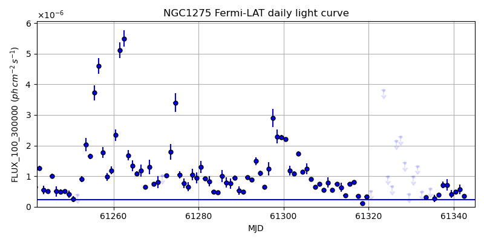
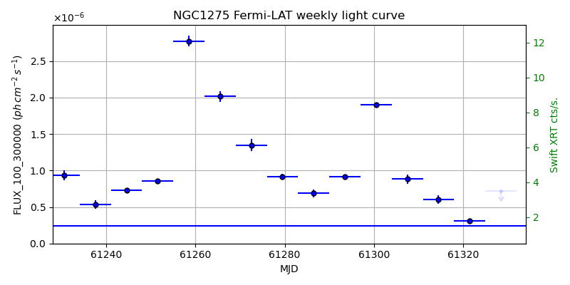
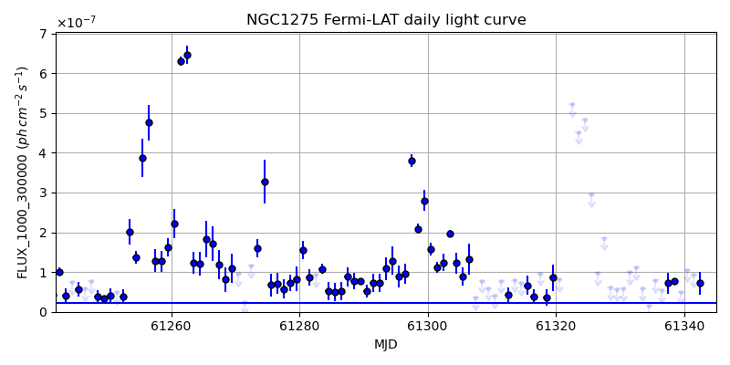
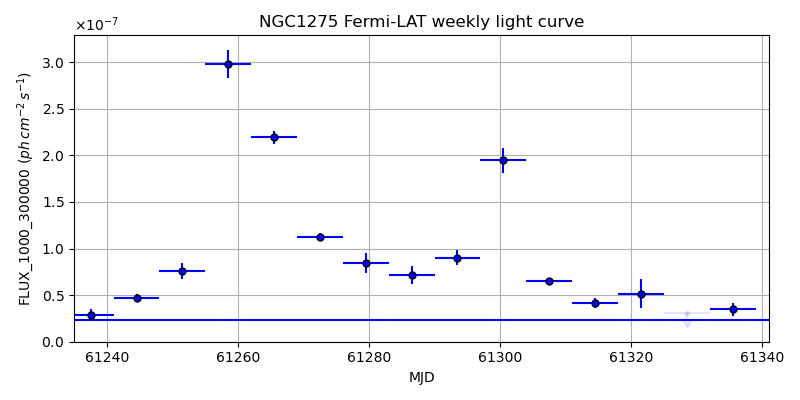

LAT Lightcurve site: https://fermi.gsfc.nasa.gov/ssc/data/access/lat/msl_lc/source/NGC_1275
Swift site: https://www.swift.psu.edu/monitoring/source.php?source=3C84
NED: Query
Time of last update of this page: UT: 2026-10-24 15:13 (MJD: 61337.635)
| Property | Value |
|---|---|
| R.A. | 3:19:48.24 |
| Dec. | 41:30:43.2 |
| z | 0.018 |
| 3FGL SpectrumType | LogParabola |
| 3FGL PL Index | |
| 3FGL Flux_100_300000 | 2.38e-07 1 / (s cm2) |
| 3FGL Flux_1000_300000 | 2.34e-08 1 / (s cm2) |
| 3FGL Flux >200 GeV | 3.81e-11 1 / (s cm2) |
| 3FGL Extrap. Crab >200 GeV | 0.16 |
| 3FGL Flux After EBL Absorption >200GeV | 3.56e-11 1 / (s cm2) |
| 3FGL EBL Crab Fraction >200GeV | 0.15 |

| MJD | dMJD | Flux | dFlux | Frac3FGL | FracCrab>200GeV | EBLFracCrab>200GeV |
|---|---|---|---|---|---|---|
| 61332.50 | 0.50 | 4.97e-07 | 0.00e+00 | 0.00 | 0.00 | 0.00 |
| 61333.50 | 0.50 | 3.18e-07 | 1.08e-08 | 1.34 | 0.22 | 0.21 |
| 61334.50 | 0.50 | 5.90e-07 | 0.00e+00 | 0.00 | 0.00 | 0.00 |
| 61335.50 | 0.50 | 2.65e-07 | 1.15e-07 | 1.11 | 0.18 | 0.17 |
| 61336.50 | 0.50 | 3.82e-07 | 1.37e-08 | 1.61 | 0.26 | 0.24 |

| MJD | dMJD | Flux | dFlux | Frac3FGL | FracCrab>200GeV | EBLFracCrab>200GeV |
|---|---|---|---|---|---|---|
| 61300.50 | 3.50 | 1.91e-06 | 2.81e-08 | 8.01 | 1.29 | 1.21 |
| 61307.50 | 3.50 | 8.82e-07 | 6.27e-08 | 3.71 | 0.60 | 0.56 |
| 61314.50 | 3.50 | 6.00e-07 | 5.71e-08 | 2.52 | 0.41 | 0.38 |
| 61321.50 | 3.50 | 3.06e-07 | 3.60e-08 | 1.29 | 0.21 | 0.20 |
| 61328.50 | 3.50 | 7.16e-07 | 0.00e+00 | 0.00 | 0.00 | 0.00 |

| MJD | dMJD | Flux | dFlux | Frac3FGL | FracCrab>200GeV | EBLFracCrab>200GeV |
|---|---|---|---|---|---|---|
| 61332.50 | 0.50 | 1.12e-07 | 0.00e+00 | 0.00 | 0.00 | 0.00 |
| 61333.50 | 0.50 | 5.79e-08 | 0.00e+00 | 0.00 | 0.00 | 0.00 |
| 61334.50 | 0.50 | 1.50e-08 | 0.00e+00 | 0.00 | 0.00 | 0.00 |
| 61335.50 | 0.50 | 7.95e-08 | 0.00e+00 | 0.00 | 0.00 | 0.00 |
| 61336.50 | 0.50 | 5.38e-08 | 0.00e+00 | 0.00 | 0.00 | 0.00 |

| MJD | dMJD | Flux | dFlux | Frac3FGL | FracCrab>200GeV | EBLFracCrab>200GeV |
|---|---|---|---|---|---|---|
| 61300.50 | 3.50 | 1.95e-07 | 1.35e-08 | 8.32 | 1.34 | 1.25 |
| 61307.50 | 3.50 | 6.57e-08 | 2.89e-09 | 2.80 | 0.45 | 0.42 |
| 61314.50 | 3.50 | 4.17e-08 | 5.23e-09 | 1.78 | 0.29 | 0.27 |
| 61321.50 | 3.50 | 5.17e-08 | 1.60e-08 | 2.21 | 0.36 | 0.34 |
| 61328.50 | 3.50 | 3.05e-08 | 0.00e+00 | 0.00 | 0.00 | 0.00 |
--------------------------------------------------------- Using user-supplied coords: 3:19:48.24 41:30:43.2 2000 --------------------------------------------------------- FLWO UT night of: 2026-10-25 Local Sid. @ Midnight: 01:50 Sunset (-15.0) (local, UT): 18:49 01:49 Sunrise (-15.0) (local, UT): 05:27 12:27 Moonrise (local, UT): Moonset (local, UT): Moon phase: 0.99 --------------------------------------------------------- AzTime LSID UT Obj_el Obj_az Mn_el Mn_az Sep. --------------------------------------------------------- 18:49 20:39 01:49 13.5 49.1 26.2 94.5 44.4 19:19 21:09 02:19 18.4 51.9 32.4 98.6 44.1 19:49 21:39 02:49 23.5 54.4 38.6 103.2 43.9 20:19 22:09 03:19 28.8 56.5 44.7 108.4 43.7 20:49 22:39 03:49 34.2 58.4 50.6 114.6 43.5 21:19 23:09 04:19 39.7 59.9 56.2 122.3 43.2 21:49 23:39 04:49 45.2 60.9 61.2 132.2 43.0 22:19 00:09 05:19 50.8 61.4 65.5 145.3 42.8 22:49 00:39 05:49 56.4 61.2 68.4 162.2 42.6 23:19 01:10 06:19 62.0 59.9 69.4 182.2 42.4 23:49 01:40 06:49 67.5 56.7 68.2 202.0 42.2 00:19 02:10 07:19 72.6 50.1 65.1 218.6 42.0 00:49 02:40 07:49 77.1 36.8 60.8 231.3 41.8 01:19 03:10 08:19 79.8 12.0 55.7 240.9 41.6 01:49 03:40 08:49 79.4 340.5 50.1 248.5 41.4 02:19 04:10 09:19 76.1 318.9 44.3 254.6 41.2 02:49 04:40 09:49 71.4 307.7 38.2 259.8 41.0 03:19 05:10 10:19 66.1 302.3 32.1 264.4 40.8 03:49 05:40 10:49 60.6 299.6 26.0 268.5 40.6 04:19 06:10 11:19 55.0 298.6 19.9 272.4 40.4 04:49 06:40 11:49 49.4 298.6 13.8 276.2 40.1 05:19 07:11 12:19 43.8 299.3 7.8 279.9 39.9 05:27 07:18 12:27 42.4 299.6 6.2 280.9 39.8 --------------------------------------------------------- Moon up all night, no dark time. Dark hours >55 deg.: 0.00